Containerized Installation LAB
The following steps demonstrate how to install all AAP 2.7 components on a single system using the all-in-one pattern:
-
We are going to follow an All-in-one pattern approach for the setup.
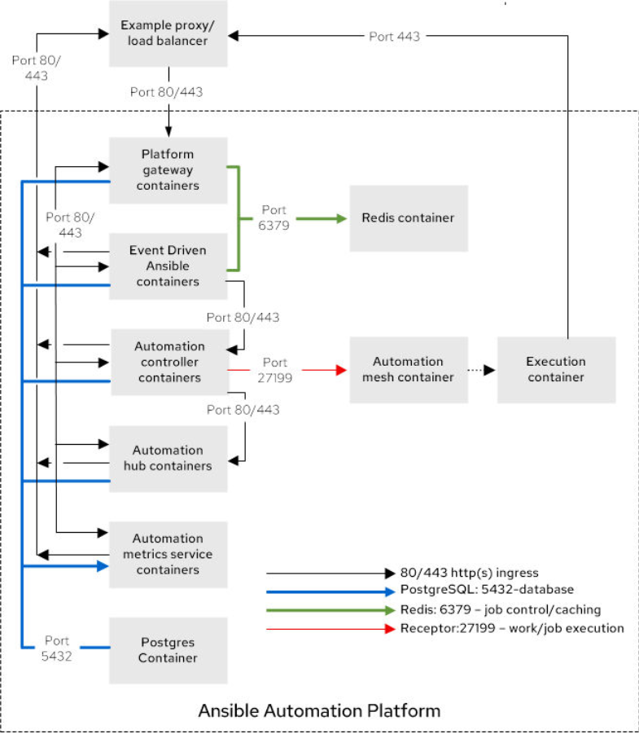
-
OpenShift Console Access:
-
Navigate to Virtualization → VirtualMachines
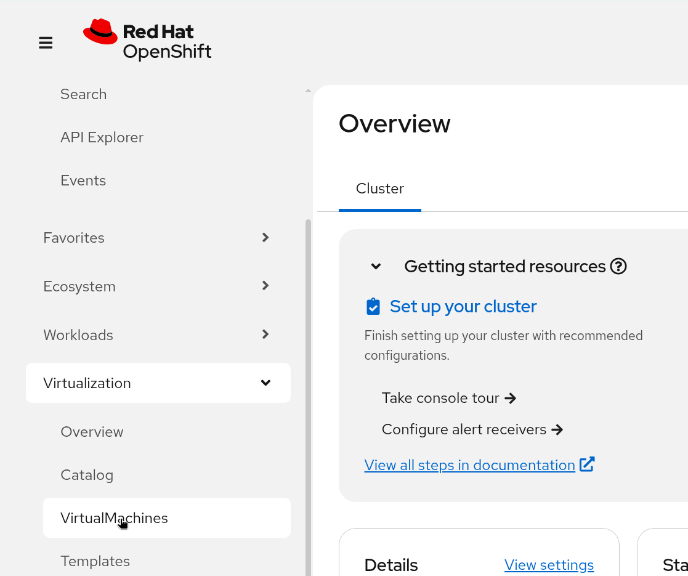
-
Select namespace:
aap-lab -
Click on
aap-lab-rhel10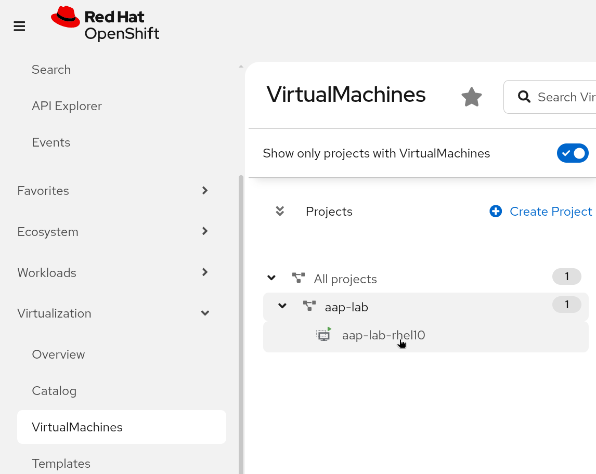
-
Click on the Open Web Console button.
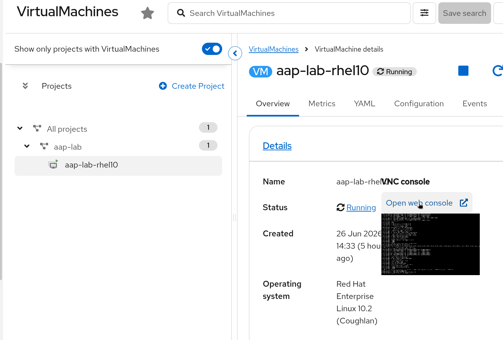
-
Use the Serial tab for terminal access.
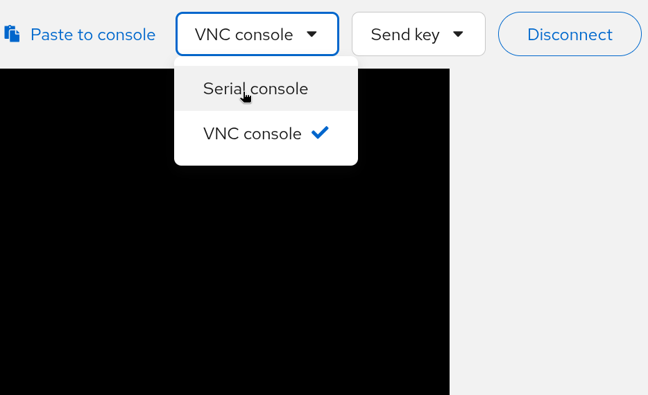
-
-
Copy the username and password from the task bar and use CTRL+SHIFT+V to paste the credentials in the terminal. to access the system.
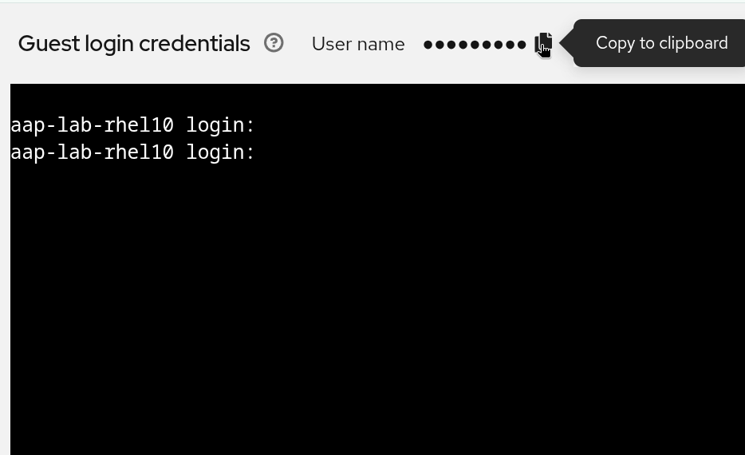
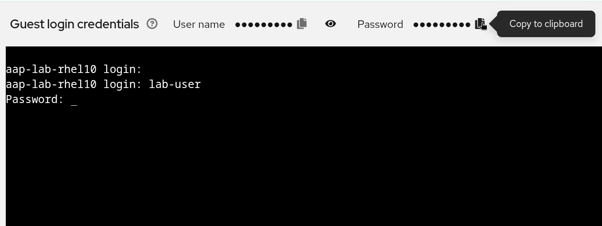
-
Register the system with Red Hat Subscription Management and attach the subscription to the system.
sudo subscription-manager registerusername: <YOUR-RHN_LOGIN> password: <YOUR-RHN_PASSWORD>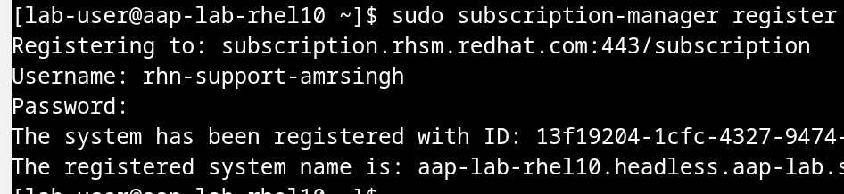
-
Install the required and useful utilities:
sudo dnf install -y wget git-core rsync vim ansible-core -
Go to the Installer link and Get the installer link for Ansible Automation Platform 2.7 Containerized Setup Bundle for RHEL 10.
Note: Please follow steps 5 and 6 one after another in order to avoid the link expiration error, as the copied URL has an expiration time. Reload the website, repeat step 5, and copy the link if you are having trouble.
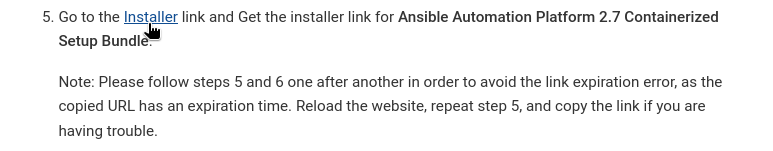
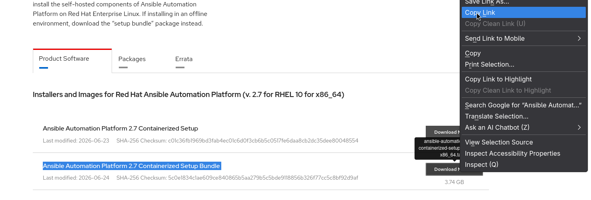
-
Download the installer file to the VM:
wget -O aap.tar.gz "<paste-link-here taken from step 5>"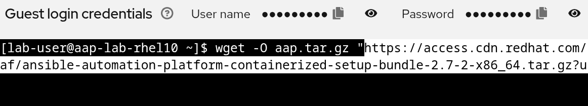
-
Extract the aap.tar.gz file using the following command:
tar -xvf aap.tar.gz -
Get the hostname from the system and copy it.
hostname -f
|
Password security guidelines:
|
-
Using the cd command, enter the extracted folder. Then, use the vim command, open the inventory-growth file and make the following changes, wherever they appear throughout the entire inventory-growth file:
cd <extracted-folder-from-step-6> vim inventory-growth aap.example.org → < paste system hostname> <set your own> → redhat <set your own> ← This value can be customized as per your need but remember to use the same while doing the login after the deployment.To replace all occurrences at once, use vim’s global substitute command instead of editing each line manually. While in vim, type the following in command mode (press Esc first):
# Replace every occurrence of aap.example.org with your actual hostname :%s/aap.example.org/<your-hostname>/g # Replace every occurrence of <set your own> with your chosen password :%s/<set your own>/redhat/g-
:%s— runs the substitution across all lines in the file. -
/g— replaces every match on a line, not just the first. -
After running both commands, type
:wqand press Enter to save and quit. -
If you chose a different password instead of
redhat, use that value in the second command. Use the same password when logging in after deployment.
Click this link to learn how to use Vim basic operations.
-
-
Once the inventory file is ready follow the below steps to do the installation:
ansible-playbook -i inventory-growth ansible.containerized_installer.install -
Simply go to the RHDP login page from the lab deployment and access the AAP web interface.
-
Use the user admin and the password set during the time of installation. The example above uses
redhatas the password.
|
Use a stronger password for enterprise deployments. |
-
Provide the Red Hat login ID to get the subscription for attaching it to the AAP and 60-day subscription to Red Hat Ansible® Automation Platform or Red Hat Developer Subscription for Individuals subscription can be used for this lab.
-
After Login run the Project sync for the Demo project to confirm the job is getting executed.